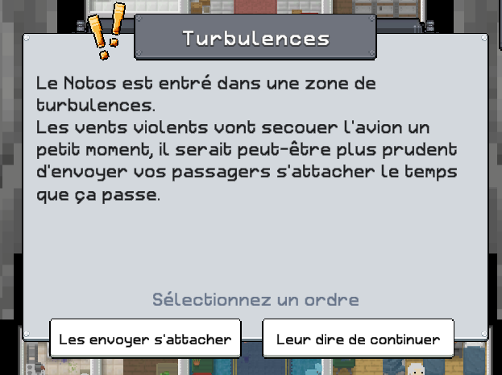
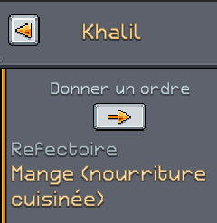
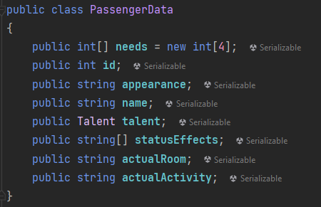

Hyperaustral est un jeu de gestion en 2D top-down, où le joueur peut voir, contrôler et organiser tout ce qui se déroule dans l’immense avion-arche dont il dispose.
À mesure du temps, il devra maintenir son équipage en vie face aux obstacles du jeu en ordonnant à ses passagers d’effectuer diverses tâches et en résolvant des choix sur des interfaces textuelles.
S’il parvient à ne pas tout perdre pendant suffisamment de temps et d’étapes narratives, les survivants seront sauvés et le joueur gagnera la partie.
Coeur du jeu
Le cœur du jeu est d'assigner des passagers à des tâches dans chacune des salles de l’arche-avion.
Cette action est réalisée un nombre conséquent de fois par le joueur donc doit être simple et intuitive à réaliser.
Les contrôles et une UI adaptés permettront au joueur de choisir les passagers à assigner rapidement.
C’est la mécanique principale et elle permet au joueur de réagir aux différents événements qui vont rythmer le jeu.
Brique de Gameplay
Gestion des ressources globales
Le joueur devra gérer plusieurs ressources afin de finir la partie avec le plus de passagers en vie.
Ces ressources seront globales à l’avion et se videront au cours de la partie mais pourront être produites par les passagers.
Il y a le carburant, la santé de l'avion, la nourriture "brutes" et la nourriture cuisinées.
Le joueur pourra définir sa propre stratégie de gestion de ressources afin de se préparer à mieux réagir aux événements.
Gestion des besoins des passagers
Chaque passager a des besoins qu’il faudra satisfaire pour les garder en vie et éviter des débordements.
Il y a le moral, la santé, la faim et la fatigue.
Plus les jauges de besoins d’un passager sont basses, moins il sera productif et concentré dans ses tâches.
Événements
Au cours du jeu, de multiples événements surviennent aléatoirement.
Ils peuvent avoir des conséquences positives comme négatives.
Pour certains éléments, un choix sera donné aux joueurs pour choisir sa réaction.
-

Événements à choix
-
Résolution
J'ai participé au développement et à la programmation de ce jeu.
Voici les principales tâches dont je me suis occupée durant le projet :
Implémentation de la mécanique d'assignation des passagers
J'ai implémenté la mécanique permettant d'assigner les passagers aux salles et aux activités présentes au sein de l'avion-arche Notos.
Pour se faire j'ai tout d'abord conçu la structure des salles et activités : les salles sont représentés par des scripts qui référence des activités ainsi que leur capacité d'accueil max et les activités qui sont elle des scriptables objects qui référence les ressources consommées et/ou produites avec leur taux ainsi ques les besoins des passagers comblés et/ou épuisés et leur taux.
-
Scripts d'une salle vu dans l'éditeur
-
Scriptable object d'une activité
-

Menu d'assignation d'un passager
Implémentation des menus et de l'HUD
J'ai implémenté la navigation entre les différents menus et scène de notre jeu ainsi que l'HUD en suivant les idées conçus par une des artistes de l'équipe.
Il fallait également s'assurer que tous les systèmes des autres joueurs soient affectés par les changements de vitesse et le cas échéant les adapter.
Implémentation des sauvegardes
Nous avons voulu laisser au jour la possibilité de pouvoir sauvegarde et reprendre sa partie plus tard.
Je me suis donc occupée de la mise en place du système de sauvegarde en utilisant un fichier Json.
Il fallait ainsi sauvegarder les passagers, les évènements passés ainsi que le temps de jeu, le reste des informations de la partie pouvant ainsi être déduite.
Par exemple, le chapitre actuel pourra être déduit par le temps de jeu.
-
Data sauvegardés
-

Class PassengerData
-
Class PastEventData
Implémentation de la gestion du temps
Une mécanique importante des jeux de gestion étant l'écoulement du temps : en pause, normal ou accéléré, je me suis chargé d'implémenter tous ce système afin de rendre le joueur pleinement maitre de son vaisseau.